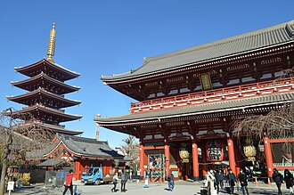
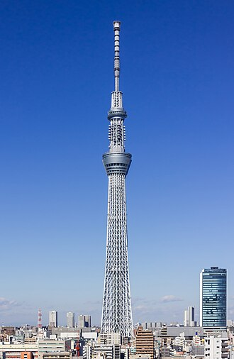
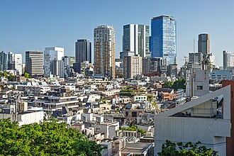

← 各地のご案内へ戻る
東京ギャラリー
東京の街並みと代表スポットのイメージです。
東京湾岸の街並み
高層ビル群が連なる東京の都市スケールを感じられる景観です。
浅草寺

歴史ある下町エリアで、伝統文化と参道散策を楽しめます。
東京スカイツリー

東京を象徴するランドマークで、周辺観光との組み合わせも人気です。
渋谷の都市景観

最新カルチャーが集まるエリアの活気ある雰囲気を体感できます。
画像出典: Wikimedia Commons